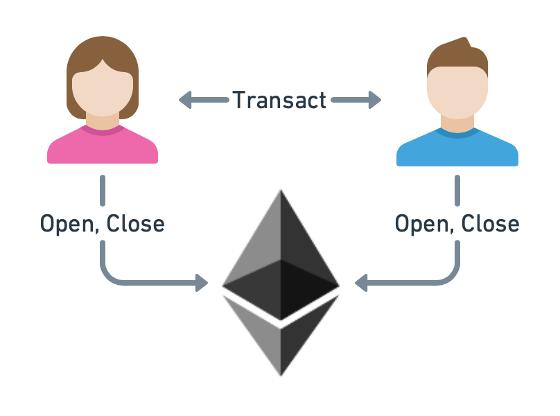

Introduction
In this tutorial, we want to take a look at the process of creating a simple application that allows two clients, Alice and Bob, to open a go-perun channel and use it for performing off-chain payment transactions. We use Ethereum as the blockchain backend for funding channels and resolving disputes.
{kind=link}
We will introduce the functionality that go-perun offers for this simple use case. The presented implementation can be used as an example that helps you build your own channel application.
Dependencies
Before we start, let us cover the dependencies required for following this tutorial.
Tutorial Source Code
The source code is available at perun-examples/payment-channel.
# Download repository.
git clone https://github.com/perun-network/perun-examples.git
cd perun-examples/payment-channel
Attention
We use context.TODO() and panic(err) throughout the tutorial to keep the code simple. In production code, one should always initialize the context and handle errors properly.
Go
The tutorial source code will be written in Go. Basic knowledge of Go is therefore required. The official installation guide describes how to install the required command-line tools.
# Check that Go is installed.
go version
Ganache
We will use ganache-cli as a local Ethereum blockchain for testing. Please make sure that it is installed. You can find installation instructions on their web page.
# Check that ganache-cli is installed.
ganache-cli --version